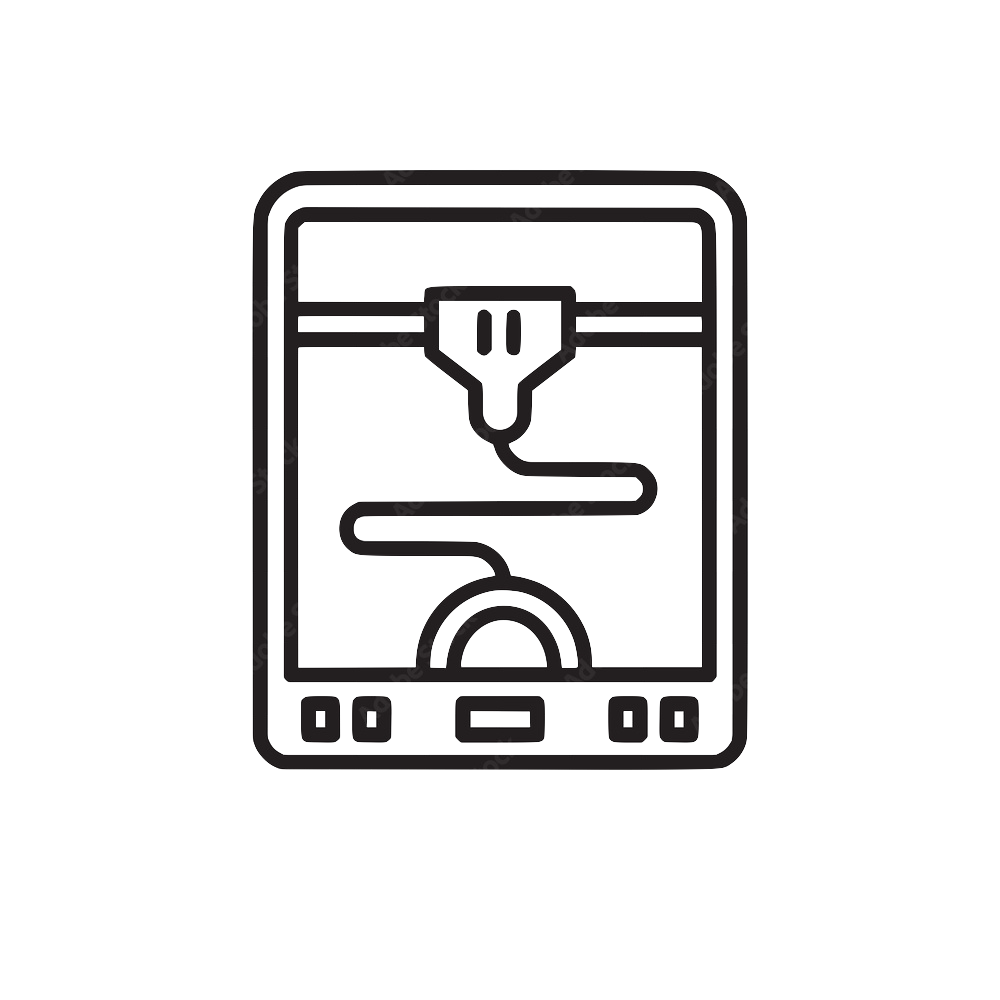

OBJECTIVE
Fourth-year biomedical-mechanical engineer at the University of Southern California. Previous experience involving decoding cortical dendritic signals, fabrication of lateral flow assay cassette assemblies, investigating novel ultrasound cancer therapy on glioblastoma-on-chip, profiling glucose-related peripheral nerves for diabetes, and mechanical testing of synthesized hydrogels. Currently interested in pursuing a biomechanical internship in a professional, industry setting.
EDUCATION
Presidential Scholar (Half Tuition)
EXPERIENCE
Mechanical Design Member
- Fabricate 3D-printed cassettes for peanut-detecting lateral flow assays in SolidWorks
- Optimize capillary flow and product cost through material selection and computational stress analysis
- Implemented quality documentation system to facilitate GDP and GMP
Biomedical Research Intern
- Synthesized novel gelatin- and hyaluronic acid-based hydrogels to mimic brain rheology
- Fabricated microfluidic glioblastoma spheroids-on-chip for chemotherapy drug screening
- Performed tensile testing, cell culture, immunocytochemistry, LDH assays, and cell viability quantification
Research Assitant
- Developed novel ECI tissue clearing protocols in murine pancreatic and pituitary tissue
- Profiled neuroendocrine pathways disrupted by repeated hypoglycemia in diabetic mice
- Utilized immunohistochemistry, murine models, confocal microscopy, ImageJ, and Prism8 analyses
SKILLS

Programming Languages
Python | MATLAB | SolidWorks | SQL | R
Laboratory Skills
Instron Tensile Testing | ImageJ | Organs-on-Chip | 3D-Printing